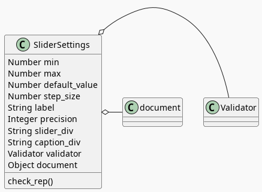

Slider and Caption Settings
Table of Contents
The Sliders Settings

The SliderSettings class holds the values for the Slidini class and optionally validates the values it's been given.
The Scenario
Since there's only one method to call and it defers everything to the Validator I'm going to have one Scenario to test, but to try and make it easier to read I'm going to break up the Then-And statements within it, but I'm not going to break up the check_rep method itself so I'm not going to show the implementation under each test it satisfies, but just show the class definition in entirety after all the tests.
The Testing
First we need to import some javascript. Even though I'm faking all the methods I'm going to use on the Validator class I used the real definition because I was hoping to figure out how to get sinon to copy all the methods automatically, but I didn't see anything indicating it can, so maybe next time I'll just make a fake object instead.
import { expect } from "chai";
import { faker } from "@faker-js/faker";
import { Given, When, Then } from "@cucumber/cucumber";
import { fake, replace } from "sinon";
import { SliderSettings } from "../../../../files/javascript/slider.js";
import { Validator } from "../../../../files/javascript/validator.js";
Since the Validator's methods get called more than once I need to be able to know what (zero-based) index each call is - e.g. checking default_value is the third Validator.is_a_number call that the SliderSettings makes, so to retrieve the object to check that the call went as expected I need to get the sinon call object at index 2. I'm making the IS object below to hold the indices to get the calls for each property… it'll make more sense later.
const IS = {
NUMBER: { min: 0,
max: 1,
default_value : 2,
step_size: 3,
},
ELEMENT: {
slider_div: 0,
}
};
const METHODS = ["is_a_number", "is_set", "is_an_integer", "is_an_element_id"];
The METHODS array holds the names of all of the Validator's methods that check_rep uses so that I can replace the Validator's methods in a loop instead of doing it separately for each one.
Setup The Slider Settings
Now I'll build the SliderSettings with the faked Validator methods in the cucumber Given function.
Feature: Slider Settings
Scenario: check_rep is called.
Given a Slider Settings
Since all the methods are going to be faked, I don't need a mock document the way I did for the Validator tests.
Given("a Slider Settings", function() {
this.validator = new Validator({});
Now that I have a Validator instance, I can replace all the methods to test with fakes.
for (const method of METHODS) {
replace(this.validator, method,
fake.returns(null));
}
Next, I'll fake the arguments passed to the SliderSettings object and store them in the World this so that I can check that they were passed to the validator as expected in the tests.
this.min = faker.number.float();
this.max = faker.number.float();
this.default_value = faker.number.float();
this.step_size = faker.number.float();
this.slider_div = faker.lorem.word();
Finally, I can create the SliderSettings to test.
this.settings = new SliderSettings(this.min,
this.max,
this.default_value,
this.step_size,
this.slider_div,
this.validator);
});
Calling Check Rep
This is the only call to SliderSettings I make.
When check_rep is called
When("check_rep is called", function() {
this.settings.check_rep();
});
Now the rest of the tests check all the calls to the Validator that the check_rep method made.
Min Check
The first property that check_rep validates is the min.
Then it checked the min
// Given a Slider Settings
// When check_rep is called
Then("it checked the min", function() {
expect(this.validator.is_a_number.getCall(IS.NUMBER.min).calledWith(
"min", this.min
)).to.be.true;
});
this.validator.is_a_number is a faked method which allows us to check the arguments passed to it by getting the call object using getCall and checking the arguments with calledWith. In this case checking min is the first call to is_a_number so I'm passing 0 to getCall, retrieving it from the IS object I created earlier (using IS.NUMBER.min).
I'm not crazy about the need to pass in strings, but since they always match the variable name I guess it's easy enough to see any typos.
The rest of the checks are pretty much the same thing but with different variables so I'll stop the commentary for a while.
Max Check
And it checked the max
Then("it checked the max", function() {
expect(this.validator.is_a_number.getCall(IS.NUMBER.max).calledWith(
"max", this.max
)).to.be.true;
});
Default Value
And it checked the default_value
Then("it checked the default_value", function() {
expect(this.validator.is_a_number.getCall(IS.NUMBER.default_value).calledWith(
"default_value", this.default_value
)).to.be.true;
});
Step Size
And it checked the step_size
Then("it checked the step_size", function() {
expect(this.validator.is_a_number.getCall(IS.NUMBER.step_size).calledWith(
"step_size", this.step_size
)).to.be.true;
});
Slider Div
And it checked the slider_div
Then("it checked the slider_div", function() {
expect(this.validator.is_an_element_id.getCall(IS.ELEMENT.slider_div).calledWith(
"slider_div", this.slider_div
)).to.be.true;
});
The Slider Settings Implementation
Now that we have the tests, I'll implement the slider settings.
The SliderSettings holds the settings to build Slidini, the Slider and Caption holder. It really could be done with a plain object (which is what it was) but I decided to add a validator to make sure that I was getting all the parameters right.
class SliderSettings {
constructor(min, max, default_value, step_size,
slider_div,
validator) {
this.min = min;
this.max = max;
this.default_value = default_value;
this.step_size = step_size;
this.slider_div = slider_div;
this.confirm = validator;
}; // constructor
check_rep(){
this.confirm.is_a_number("min", this.min);
this.confirm.is_a_number("max", this.max);
this.confirm.is_a_number("default_value", this.default_value);
this.confirm.is_a_number("step_size", this.step_size);
this.confirm.is_an_element_id("slider_div", this.slider_div);
}; // check_rep
}; // SliderSettings
The Caption Settings
The Caption Settings are pretty much just like the Slider Settings except that they are meant for the label that lets the user know what the current slider's value is. I used to have everything in the SliderSettings but it wasn't obvious what belonged to which so I broke them apart.
The Testing
This is pretty much exactly the same as the testing for the SliderSettings so I won't have a whole lot to add to it.
Imports
import { expect } from "chai";
import { faker } from "@faker-js/faker";
import { Given, When, Then } from "@cucumber/cucumber";
import { fake, replace } from "sinon";
import { CaptionSettings } from "../../../../files/javascript/slider.js";
import { Validator } from "../../../../files/javascript/validator.js";
Call Object Indices
const CAPTION_IS = {
SET: {
label: 0
},
INTEGER: {
precision: 0
},
ELEMENT: {
caption_div: 0
}
};
const METHODS = ["is_a_number", "is_set", "is_an_integer", "is_an_element_id"];
The Feature
Feature: Settings for a caption/label.
Scenario: The CaptionSettings is built.
Given a CaptionSettings
When the properties are checked
Then they are the expected properties.
Setting up the Caption Settings in "Given"
Given("a CaptionSettings", function() {
These are the three properties that the Slidini class is going to need to set up the label.
this.label = faker.lorem.words();
this.precision = faker.number.int();
this.caption_div = faker.lorem.word();
this.div_id_selector = "#" + this.caption_div;
Once again I'm replacing the Validator methods so I can check the calls and as a side-effect the document won't get used so I don't need JSDOM.
this.validator = new Validator({});
for (const method of METHODS) {
replace(this.validator, method,
fake.returns(null));
}
And finally I'll build our software to test.
this.caption_settings = new CaptionSettings(this.label,
this.precision,
this.caption_div,
this.validator);
Putting the values to check into variables seems like an unnecessary step, since you could test and retrieve the properties at the same time, but I like the use of When and it makes the lines in the Then block a little shorter.
When("the properties are checked", function() {
this.actual_label = this.caption_settings.label;
this.actual_precision = this.caption_settings.precision;
this.actual_caption_div = this.caption_settings.caption_div;
});
Then("they are the expected properties.", function() {
expect(this.actual_label).to.equal(this.label);
expect(this.actual_precision).to.equal(this.precision);
expect(this.actual_caption_div).to.equal(this.caption_div);
});
Check Rep
Scenario: check_rep is called.
Given a CaptionSettings
When CaptionSettings.check_rep is called
Oddly, when I just said "When check_rep is called" instead of "When CaptionSettings.check_rep is called" cucumber ended up using the function I made for the SliderSettings tests that had the same When string. For some reason it lets them pollute each other's tests, even though they have separate feature and step files. I suppose this could make it easier to re-use test-functions, but it makes it kind of dangerous since you have to make sure that everything has a unique title.
Or maybe there's something I'm missing…
When("CaptionSettings.check_rep is called", function() {
this.caption_settings.check_rep();
});
Did It Validate the Label?
Then it checks the label
Then("it checks the label", function() {
expect(this.validator.is_set.getCall(CAPTION_IS.SET.label).calledWith(
"label", this.label
)).to.be.true;
});
Did It Validate the Precision?
And it checks the precision
Then("it checks the precision", function() {
expect(this.validator.is_an_integer.getCall(CAPTION_IS.INTEGER.precision).calledWith(
"precision", this.precision
)).to.be.true;
});
Did It Validate the Div ID?
And it checks the caption div ID.
Then("it checks the caption div ID.", function() {
expect(this.validator.is_an_element_id.getCall(
CAPTION_IS.ELEMENT.caption_div).calledWith(
"caption_div", this.caption_div
)).to.be.true;
});
Does it add a pound sign to the DIV ID?
The p5.select method uses CSS selectors so it needs you to put a # sign in front of the DIV ID to tell it that it's an ID.
Scenario: The caption DIV selector is set up
Given a CaptionSettings
When the caption DIV ID selector is retrieved
Then the caption DIV selector has the pound sign.
When("the caption DIV ID selector is retrieved", function() {
this.actual_div_id_selector = this.caption_settings.div_selector;
});
Then("the caption DIV selector has the pound sign.", function() {
expect(this.actual_div_id_selector).to.equal(this.div_id_selector);
});
The CaptionSettings Implementation
So here's where I implemennt the class. The label property is a string that gets inserted into the string that's displayed on the Label element. Maybe I should have called it something else… The precision property is used to decide how many decimal places to show in the Label, and the caption_div is the ID of the element where I'm going to stick the Label.
class CaptionSettings {
_div_selector = null;
constructor(label, precision, caption_div, validator) {
this.label = label;
this.precision = precision;
this.caption_div = caption_div;
this.validator = validator;
};
get div_selector(){
if (this._div_selector === null) {
this._div_selector = "#" + this.caption_div;
}
return this._div_selector;
};
check_rep() {
this.validator.is_set("label", this.label);
this.validator.is_an_integer("precision", this.precision);
this.validator.is_an_element_id("caption_div", this.caption_div);
};
}; // CaptionSettings
Links
Related Post
References
- id - HTML: HyperText Markup Language | MDN [Internet]. 2023 [cited 2023 Sep 14]. Available from: https://developer.mozilla.org/en-US/docs/Web/HTML/Global_attributes/id